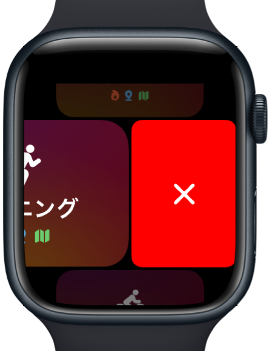
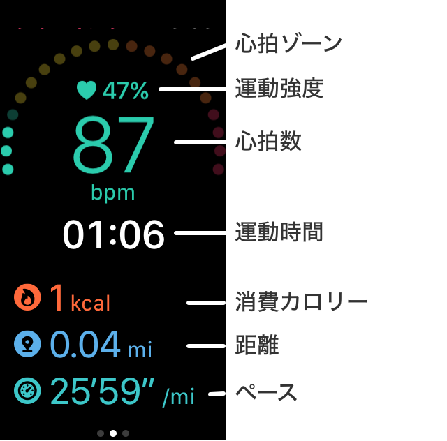
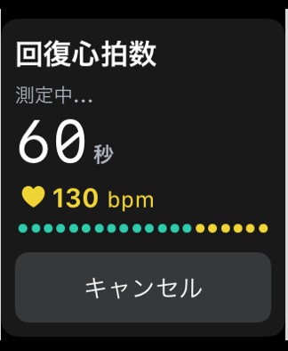
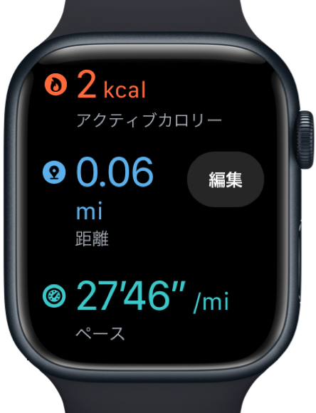

ヘルプ
ワークアウトの測定
測定は、Apple Watch にて行います。
一番最初の測定時には、ヘルスケアへのアクセス許可設定がはじまります。
本測定の前に予め設定を行っておいてください。
ヘルスケアへのアクセス許可手順
- Apple Watch と iPhone をお手元に用意してください。
- Apple Watch でZonesアプリを起動します。
- Healthにアクセス許可を求めるダイアログが表示されます。

- iPhoneでも同様にアクセス許可を求めるダイアログが表示されますので、Zonesを開くボタンを押します。

- Healthの許可画面が表示されます。全てをONにして「許可」(Allow)を押します。

ワークアウト測定手順
- ワークアウトの種類を選択し、開始します。

- 実行中は、ゾーンや心拍数などが表示されます。縦スクロールすると、距離、消費カロリーなどが表示できます。
 - 横スクロールの1ページ目に、「終了」ボタンがあります。また、画面長押しでもボタンを表示できます。
(ランニング時で、自動停止/再開の設定をしている場合は「一時停止」ボタンは表示されません)
- 終了時、有酸素ゾーン以上だった場合には、回復心拍数の測定が始まります。
この画面の一番下にあるキャンセルボタンで、この測定をキャンセルすることができます。
 - 終了すると、結果画面が表示されます。
運動時間が30秒より短い場合は、キャンセルとみなして保存はされません。
 - 「保存」ボタンを押して、保存してください。
終了後、1分以上経過すると自動的に保存されます。自動保存後は「閉じる」ボタンのみ表示されます。